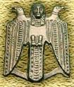

 |
Древний прообраз российского двухглавого орла (бронзовый кулон в форме трехголовой птицы). I-IV века н.э. Холмогоры. Западная Сибирь |
"От Руси к России"
 Часть первая. КИЕВСКАЯ
ДЕРЖАВА
Часть первая. КИЕВСКАЯ
ДЕРЖАВА 
 1. Славяне и
их соседи
1. Славяне и
их соседи - Две Европы. Готы. Хунны и гунны. Рождение Киевской державы.
- 2. Славяне
и их враги
- В низовьях Волги. Пришельцы с юга. Власть и деньги. Славяно-русы и Византия. Триумф Святослава.
- 3. Крещение
Руси
- Святослав и Калокир. Святослав и Цимисхий. Прощание с русами. Брат на брата. Последствия лжи. Новый путь.
- Сыновья Владимира. Мудрость компромисса. Перемены. Всеслав Полоцкий и Ярославичи. Олег Святославич.
- В поисках союзников. Беспринципность. Отец и сын. Начало конца.
- Часть вторая. В СОЮЗЕ С ОРДОЙ
- 1. Рождение
Монгольской империи
- Великая степь. Юность Чингиса. За право на жизнь. Наследники Чингисхана.
- 2. Лицом
на восток
- Калка. Великий западный поход. Князь Александр и хан Батый. За други своя. Конец и вновь начало.
- Сыновья и сыновцы. Дела литовские. Церковь и Москва. Дела ордынские. Синяя Орда. На попе Куликовом.
- Тохтамыш и Тимур. Василий, Витовгт и Едигей. Меч и крест. Шемяка. Государь всея Руси.
- Часть третья. ЦАРСТВО
МОСКОВСКОЕ
- 1. Неистовые
люди
- Рубеж. В Москве и на границах. Иосифляне и нестяжатели. На юг и восток. Ливонская война. Кромешники. "Зять Малюты".
- 2. Смутное
время
- Самозванец. Восстание Болотникова. Несовместимость. Спасители Отечества. Устроение.
- В борьбе за совесть. Гетман и народ. Народ и гетманцы. Последствия выбора.
- В глубь улуса Джучиева. "Встречь солнца".
- Истоки раскола. Царь и патриарх. Костры. Правительство и стрельцы. Хованщина.
- В Священной лиге. Накануне реформ. Петровская легенда.
Подготовка электронного текста книги завершена в июле 1998 года.